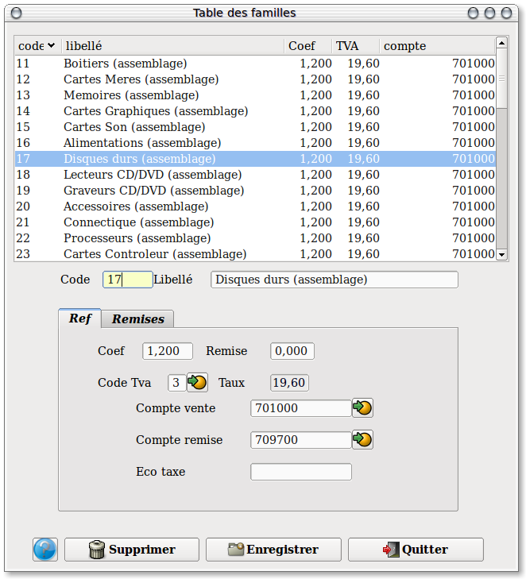
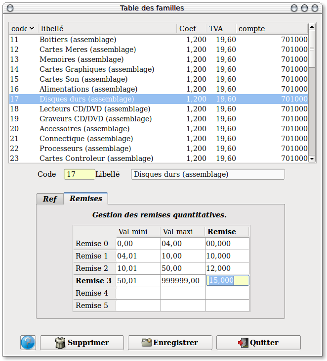

~ Comptabilité et Facturation Laurux ~

~ Comptabilité et Facturation Laurux ~ |
|
|
|

Saisir le code de la famille sur 5 caracteres
alphanumériques maxi puis son libellé sur 30.
NB: Les deux premiers caractères représentent la
famille et les trois derniers les sous familles.
Cela permet de classer dans une meme famille des produits ayant des
taux de Tva différents.
Ex: 01 Jardinage
01100
Jardinage 5.50 %
01110
Jardinage 19.60 %
Cette méthode de classification est utilisée lors
de l'impression du chiffre d'affaire par famille et permet d'avoir des
totaux par familles cohérents.
Saisir un coefficient moyen pour la famille
concernée. Ce coefficient qui sera proposé par
défaut lors de la création des produits sera
toutefois modifiable.
Saisir le code Tva de la famille.( Voir exemple plus haut )
NB : Un taux de Tva n'est pas modifiable dans les
fiches produits.
Saisir un compte vente puis un compte de remise qui seront utilisés pour le passage en comptabilité lors de la facturation.
Saisir le montant de l'éco-taxe si la famille de produit doit génerer cette taxe. ce montant sera celui qui s'affichera par défaut dans la fiche produit.
Le deuxieme onglet concerne la gestion des remises quantitatives.

Laurux propose 5 niveaux de remises quantitatives, mais on n'est pas obligé de tout utiliser.
Ces remises pourront, ultérieurement, etre importées dans les fiches produits à l'aide d'un bouton spécial.
----------------------------------------------------------------------------------------------------------------------